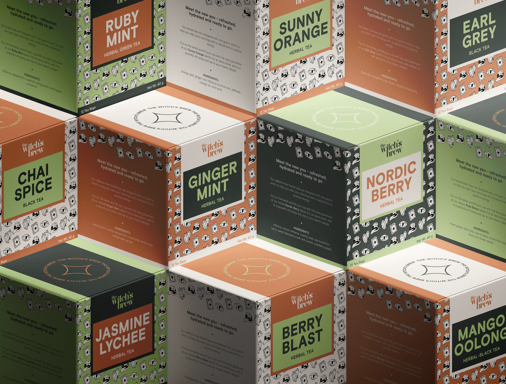
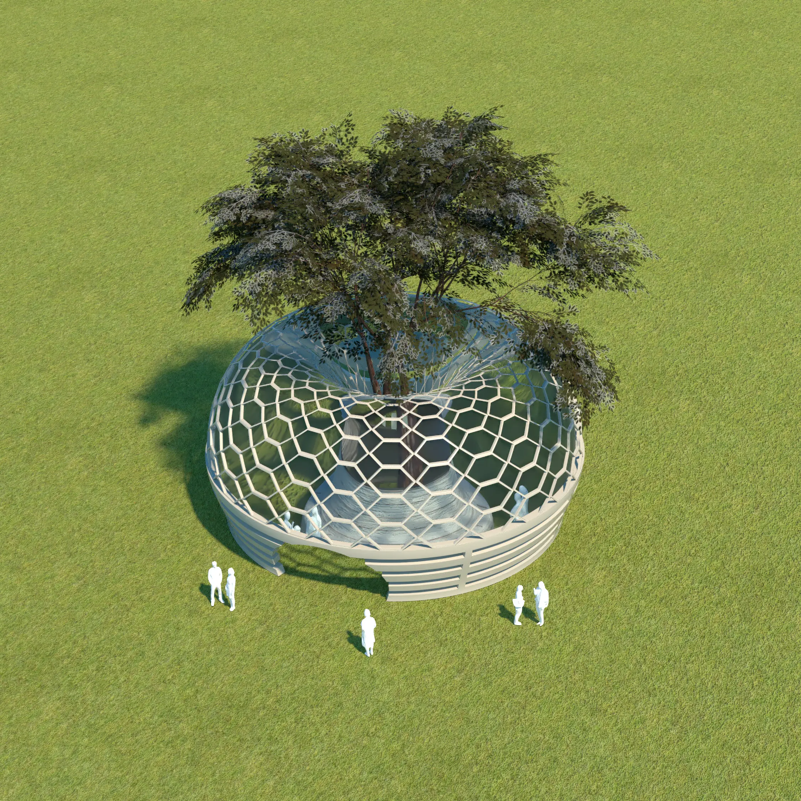

MORE WORK*
A collection of projects, works and experiments from over the years.
WolfPack Game Design
Web design, client work
New website to showcase studio projects, WolfPack team members, and World Soul game development.

The Witch's Brew
Brand & packaging design
Playful and creative tea brand that draws inspiration from astrology and spirituality, in addition to a sister line based on the zodiac signs.
Eco Domes
Installation, 3D design
Installation concept for a series of nature-inspired domes for public use, adherent to COVID-19 pandemic health and social distancing guidelines.
© Tany Dourev, 2025.
— v8.1 / ∞